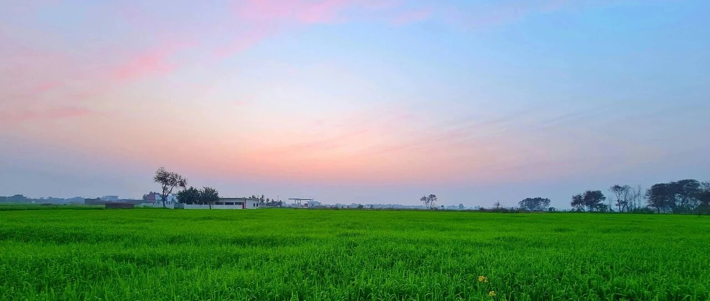

意外的收获~
纳指上涨1%，标普500上涨0.51%;
这段时间美股震荡，我很少看盘，没必要，现在成本控制在低位，面对涨跌都能波澜不惊，没啥感觉。
谷歌大涨9%，收盘价231美元，创历史新高，原因就是在“反垄断”中初步胜利，不需要剥离浏览器。
谷歌的基本盘很好，所以我一直坚定持有，它本身是全球人工智能三巨头之一，另外两个分别是OpenAI、Anthropic，前者目前估值5000亿美元，后者刚拿了130亿美元的融资，估值达到1800亿美元。
谷歌本身的大模型Gemini很好用，我经常和GPT搭配着使用，给孩子们也是这么搭配使;
谷歌旗下还有一个专注于通用人工智能（AGI）研发的部门DeepMind，研究成果有AlphaGo、AlphaFold等，在学术界和工业界都产生了深远影响。
所以我之前说不需要担心谷歌在人工智能浪潮中落伍，就是基于这些。另外，“反垄断”这个大利空逐步过去，利好逐步释放，谷歌的未来还能再高看一眼。
谷歌不必剥离浏览器，苹果跟着受益，股价上涨3.81%，收盘价238.47美元。苹果在238-240美元之间有个阻力位，突破过去后才能继续往上看。
特斯拉现在也把重心转向AI了，未来人形机器人比较有可能实现量产的企业之一，就是特斯拉。只不过股价太妖了，我不喜欢，现在持仓占比很小，1.8%以内。
英伟达GPU市场占有率94%，这数据相当恐怖。我在去年11月18日的更新中，预判一年内英伟达股价175+美元，目前已经实现。英伟达是我第一重仓股（占比43%），对它的走势，我还是很有把握的。
台积电目前市场占有率70%，没有什么像样的竞争对手，继续看好，目前台积电的仓位占比7.29%，超过谷歌，成本很低，后续有低于200美元的，我还会捞进来。
后续，我长期账户（防守型）那个账户，会减少标普500ETF的买入量，转而增加伯克希尔的买入量，A类股68万美元以下、B类股450美元以下，我都准备分批买进来。
至于资金体量最大的个人账户和第二大的家庭账户，已经进入逢高减仓的操作阶段，这两个账户后续的总金额，会低于长期账户。
都在为将来做准备。
这也是我这趟行程的收获之一，几位投资圈的朋友都给出了很多很有密度的信息，交流下来受益颇深。
… …
我这两天还在这边办点事，晚上跟孩子们视频聊了会天，小儿子表示:
大哥和老爸不在家的这段时间，他作为家里的男子汉/顶梁柱，平时既要帮助妈妈，又要做好自己份内的学习任务，还要统筹安排家里的日常生活事务，感觉当家还是不容易的。
不过他很有成就感，经历了一开始的手忙脚乱和中间一段时间的乏味/厌倦，现在已经形成这个习惯和意识。
我们现在就是放手让他去做，这个年龄段的小孩，很喜欢“被需要”的感觉。
我媳妇说，小儿子每天早上起床，收拾好房间后，会倒杯水给她并问好，再关心她“妈妈感觉怎么样？睡得好不好？”之类的，然后去收拾好个人卫生，再吃饭，跟她告别后去上学;
中午回家，饭后玩20分钟就自己午休去了。自己定好闹钟，到点起床去上学;
下午回家，自己先做好作业和预习，然后开始学英语和阅读课外书，收拾好第二天要用的东西到书包里;
晚饭后，看一会自己感兴趣的纪录片，开始跟阿姨们盘点第二天想吃的东西，看需要采购哪些食物、水果等;
晚上九点前自己洗好澡，换完衣服，并整理好第二天要穿的衣服。然后拿着故事书和老二一起，对着我媳妇的肚子，给未来的弟弟妹妹们讲故事。
我不在家的这20天，他们成长了不少，开始学着怎么做个有担当的小男子汉。
我媳妇说我这样出门一趟，给孩子一些这样锻炼的机会也很不错。也算意外的收获，以后是可以给他们多点成长的空间和历练。
对于培养孩子来说，相比把钱这类物质层面的东西留给他们，我更希望他们能培养出属于自己的不断成长和学习的能力，只有能力是彻底属于他们自身的，是外部任何变化都带不走的东西。
这些内在能力的培养，除了需要倾注时间、精力以外，还需要给他们历练的机会，经历才是最好的老师。
比如耐心、韧性、抗压能力、抗挫折能力等，逆商和财商都很重要。
我做离岸信托的原因，最初的考虑是类似“遗嘱分配”，人生无常，不知道自己能不能顺利陪娃们到长大成人成才，如果过程中有个意外，起码娃们不会阶层跌落。
首先给他们做一层物质兜底，然后再在漫长的时光中，去逐步培养他们，让他们自身的能力成长到足以去独当一面，最好用不上我设立的信托。
不被大环境裹挟情绪，独立思考，多维度看问题，只是成长路上的第一步。
大儿子说，他回国时在飞机上在看英文版的《人类简史》和《国家为什么会失败》，发现了很多跟之前看过的译本不一致的地方，译本书删减和修改太严重，意思和原版有很大的偏差。
我告诉他，这就是认知训化。偏差不重要，重要的是你能站在哪个坐标点上看世界:
靠近权力，接触的是规则和分配权；靠近资源，掌握的是选择权和调配权；靠近认知，看到的是底层结构和运行逻辑。
没什么好惊讶和抱怨的，一切存在即合理。
他这个年纪，已经对宏大叙事祛魅，我觉得挺好的。宏大叙事对投资来说，是一种毒药。
小儿子说看了阅兵，问我法西斯主义的主要特征有哪些？这个问题，我估计很多成年人都没法说得很准确。
我让他遇到问题，要学会更好地使用工具，比如在大模型上搜一下。
就这样吧。
免责声明：本人提供的信息仅供参考，不构成投资建议。本人的交易不代表任何立场；投资者应根据自身财务状况、投资目标等情况自主做出投资决策并承担投资风险。投资有风险，入市需谨慎。